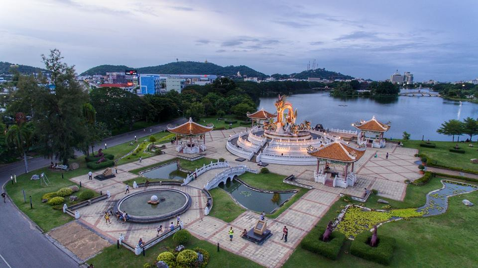
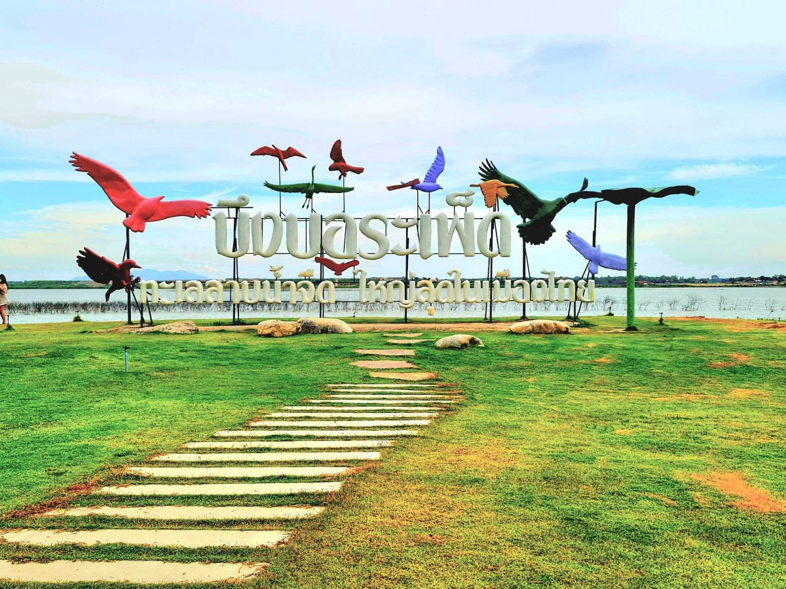
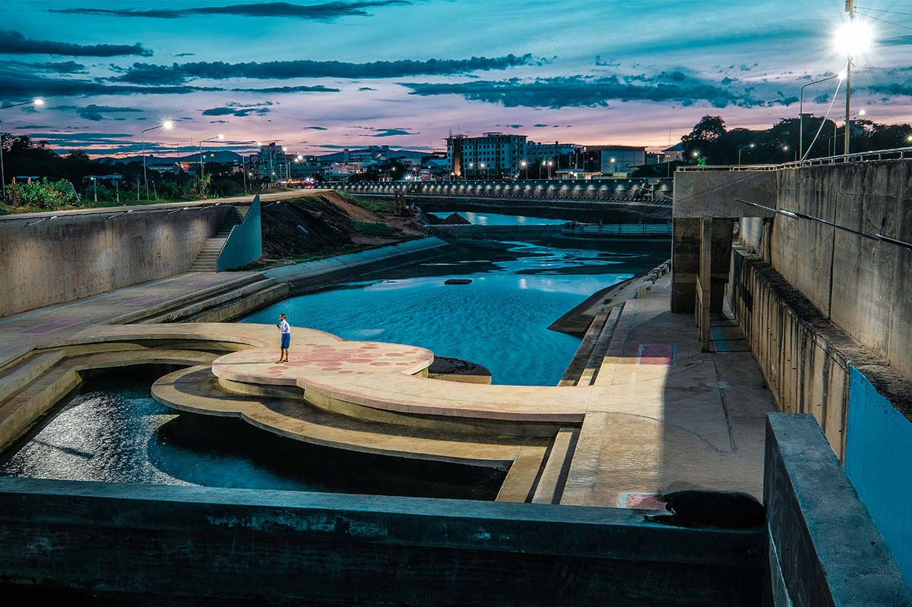
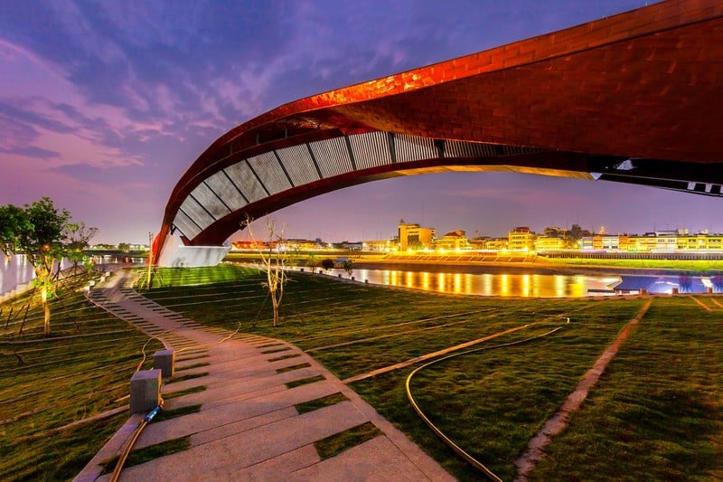
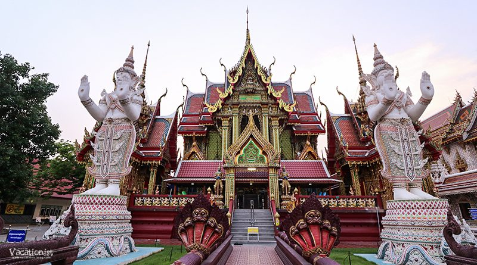
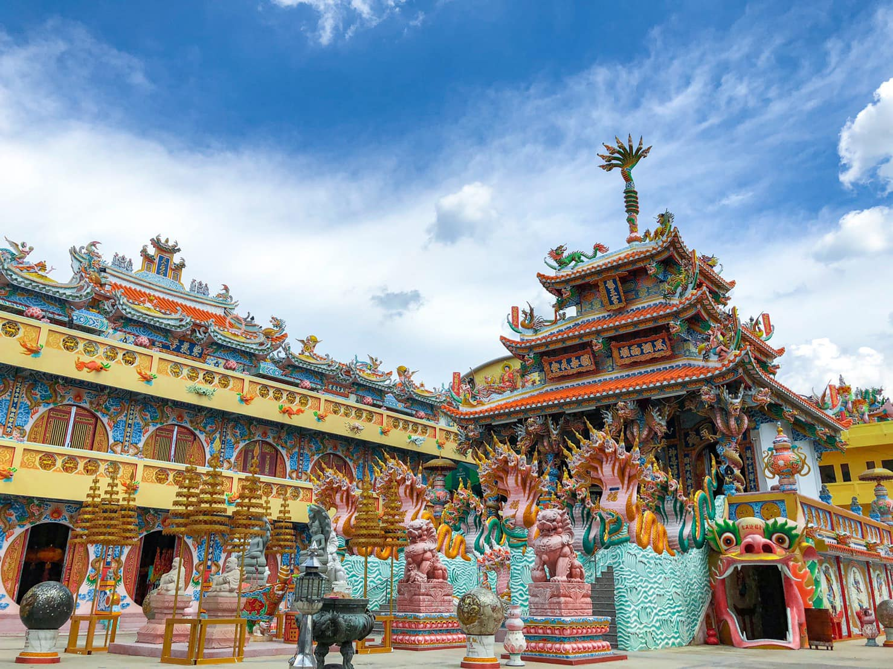

หน้าแรก
ที่พัก
จุดเช็คอิน
ของฝาก
ร้านอาหาร
แนะนำสถานที่ท่องเที่ยว จังหวัดนครสวรรค์
คำขวัญ คำขวัญประจำจังหวัด "เมืองสี่แคว แห่มังกร พักผ่อนบึงบอระเพ็ด ปลารสเด็ดปากน้ำโพ"
Previous
Next
30 ที่เที่ยวจังหวัดนครสวรรค์
เที่ยวไม่หมด ไม่ต้องกลับบ้าน!
ที่พัก
ค้นหาที่พักในจังหวัดนครสวรรค์
จุดน่าเช็คอิน
ค้นหาจุดที่น่าเช็คอินมากที่สุด
ของฝาก
ค้นหาร้านของฝากประจำจังหวัดนครสวรรค์
1
2
3
Next ›
1. วัดคีรีวงศ์ มหาเจดีย์พระจุฬามณีเจดีย์
องค์มหาเจดีย์อันศักดิ์สิทธิ์คู่บ้านคู่เมืองนครสวรรค์กันที่ วัดคีรีวงศ์ ค่ะ ซึ่งตั้งอยู่บนเขาดาวดึงส์ ที่นี่เป็นศูนย์รวมจิตใจที่ชาวนครสวรรค์ให้ความเคารพ และศรัทธาอย่างมาก

2. อุทยานสวรรค์
ที่เที่ยวนครสวรรค์ ที่เป็นเหมือนแลนด์มาร์ค ของนครสวรรค์ ที่นี่เป็นสวนสาธารณะขนาดใหญ่เป็นปอดของเมือง สำหรับพักผ่อนหย่อนใจ
3. น้ำตกแม่เรวา
สถานที่ท่องเที่ยวนครสวรรค์ ซึ่งอยู่ในพื้นที่ของอุทยานแห่งชาติแม่วงก์มีพื้นที่ครอบคลุม 2 จังหวัด คือ กำแพงเพชร และ นครสวรรค์ โดยน้ำตกแม่เรวาเป็นน้ำตกที่มีขนาดใหญ่ สำหรับใครที่สนใจอยากขึ้นไปเที่ยวต้นน้ำต้องติดต่อเจ้าหน้าที่และฟิตร่างกายให้พร้อมสักหน่อยเพราะต้องเดินเท้าจากที่ทำการ อช.แม่วงก์ หรือจะเลือกล่องแก่งบริเวณด้านล่างแทนก็สนุกสนานไม่แพ้กัน

4. บึงบอระเพ็ด
บึงบอระเพ็ด เป็นบึงทะเลสาบน้ำจืดที่มีขนาดใหญ่ที่สุดในไทย ครอบคลุมพื้นที่ทั้งหมด 3 อำเภอในจังหวัดนครสวรรค์ และเป็นถิ่นอาศัยของนกนานาชนิด มีสัตว์และพันธุ์พืชน้ำเป็นจำนวนมาก รวมทั้งจระเข้ ในพื้นที่บางส่วนเป็นเขตห้ามล่าสัตว์ป่า

5. เกาะญวน
เป็นสถานที่พักผ่อนหย่อนใจ สถานที่ออกกำลังกายของชาวนครสวรรค์ และสถานที่ท่องเที่ยวอีกแห่งหนึ่งของนักท่องเที่ยว

6. พาสาน
เป็นอีกหนึ่งจุดน่าเที่ยวที่พลาดไม่ได้ถ้าได้มาเที่ยวนครสวรรค์ ที่นี่เป็นอาคารสุดล้ำ ต้นแม่น้ำเจ้าพระยา ที่เราจะเห็นได้ถึงความอลังการทางสถาปัตยกรรม ที่นี่เป็นแหล่งการเรียนรู้ประวัติศาสตร์ วัฒนธรรม ประเพณี การท่องเที่ยว และมีลานประดิษฐานองค์เจ้าแม่กวนอิมให้นักท่องเที่ยวได้ไปสักการะ
7. เขาหน่อ
ขึ้นไปบนภูเขาหินปูนที่ลาดชัน โดยเขาหน่อ แบ่งออกเป็น 2 ส่วน เขาพระพุทธบาท และ เขานางพันธุรัต สำหรับใครที่จะไปสักการะ รอยพระพุทธบาท ก็สามารถขึ้นเขาหน่อได้ทาง เขาพระพุทธบาท โดยทางขึ้นค่อนข้างสูงและชัน บันไดกว่า 700 ขั้น บางช่วงชันถึง 90 องศาเลยทีเดียว เหมือนกับการไต่หน้าผาจริงๆ แต่บอกเลยว่า วิวด้านบนเขานั้นอลังการสุดๆ เราจะได้เห็นภาพของทั้งเมืองที่สวยงามมากๆ สายลุย ต้องไม่พลาดน้า

8. วัดศรีอุทุมพร
วัดสวย นครสวรรค์ ที่สายบุญต้องแวะไปสักการะกันสักครั้ง เพราะที่นี่เป็นวัดที่ชาวนครสวรรค์ให้ความเคารพศรัทธาเป็นอย่างมาก เนื่องจากเป็นวัดที่ หลวงพ่อจ้อย เกจิอาจารย์ชื่อดัง แห่งเมืองปากน้ำโพ เป็นอดีตเจ้าอาวาสก่อนที่ท่านจะละสังขารไปนั่นเอง

9. ศาลเจ้าพ่อนาคราช
เป็นอีกหนึ่งที่เป็นศาลเจ้าเก่าแก่และสวยงามมากๆ ด้วยสถาปัตยกรรมจีนที่ผสมผสานกับไทย ในตำบลจันเสน อำเภอตาคลี แห่งนี้
10. วัดจันเสน
ตั้งอยู่ในบริเวณ เมืองโบราณจันเสน ซึ่งเป็นชุมชนเมืองโบราณในสมัยทวารวดี ที่อยู่คู่นครสวรรค์มาอย่างยาวนาน ภายในวัดมี พระมหาธาตุเจดีย์ศรีจันเสน ที่สร้างขึ้นมาด้วยรูปแบบของสถาปัตยกรรมศิลปะในยุคทวาราวดีที่สวยงาม โดยในเจดีย์ยังเป็น พิพิธภัณฑ์จันเสน จัดแสดงนิทรรศการ และโบราณวัตถุต่างๆ ที่ถูกขุดค้นพบอีกด้วย
1
2
3
Next ›
Follow Me
จัดทำโดย
นาย ศิลป์ศรุต ก้อนทอง เลขที่15
นาย ณัชพล เอี่ยมมงคล เลขที่8
นาย จิตะบุณย์ ดีพิจารณ์ เลขที่4
Newsletter
Send